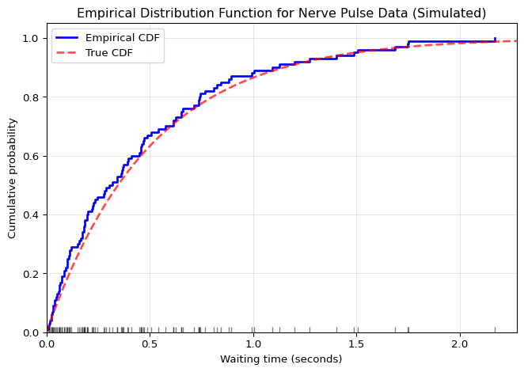
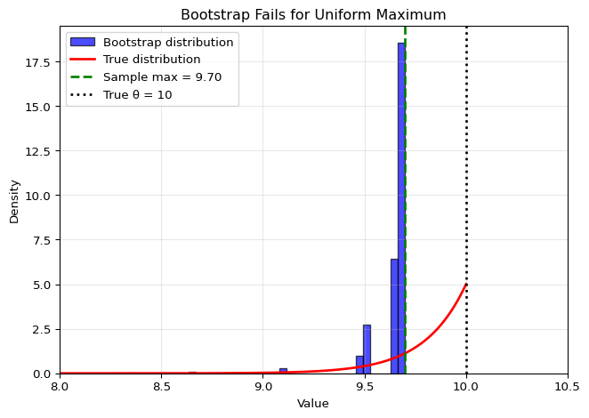

After completing this chapter, you will be able to:
Explain the definition and frequentist interpretation of a confidence interval
Apply the plug-in principle with the Empirical Distribution Function (EDF) to estimate statistical functionals
Use the bootstrap to simulate the sampling distribution of a statistic and estimate its standard error
Construct and compare the three main types of bootstrap confidence intervals: Normal, percentile, and pivotal
Identify the assumptions and limitations of the bootstrap, recognizing common situations where it can fail
Note
This chapter covers nonparametric estimation methods and the bootstrap. The material is adapted from Chapters 7 and 8 of Wasserman (2013), with reference to Chapter 6 for confidence intervals. Additional examples and computational perspectives have been added for data science applications.
4.2 Introduction and Motivation
4.2.1 Beyond Point Estimates: Quantifying Uncertainty
Imagine you’re a healthcare administrator planning for hospital capacity during an epidemic. Your data scientists provide a point estimate: “We expect 500 patients next week.” But is this estimate reliable enough to base critical decisions on? What if the true number could reasonably be anywhere from 300 to 700? A single point estimate, without quantifying its uncertainty, is often useless for decision-making. You need a plausible range – this is called a confidence interval.
In Chapter 3, we learned how to create point estimates – single “best guesses” for unknown quantities. We saw that the sample mean \bar{X}_n estimates the population mean \mu, and we even derived its standard error. But what about more complex statistics? How do we find the standard error of the median? The correlation coefficient? The 90th percentile?
Traditional statistical theory provides formulas for simple cases, but quickly becomes intractable for complex statistics. This chapter introduces two powerful ideas that revolutionized modern statistics:
The Plug-In Principle: A simple, intuitive method for estimating almost any quantity by “plugging in” the empirical distribution for the true distribution.
The Bootstrap: A computational method for estimating the standard error and confidence interval of virtually any statistic, even when no formula exists.
These methods exemplify the computational approach to statistics that has become dominant in the era of cheap computing power. Instead of deriving complex mathematical formulas, we let the computer simulate what would happen if we could repeat our experiment many times.
Finnish Terminology Reference
For Finnish-speaking students, here’s a reference table of key terms in this chapter:
English
Finnish
Context
Confidence interval
Luottamusväli
Range that contains parameter with specified probability
Coverage
Peitto
Probability that interval contains true parameter
Empirical distribution function
Empiirinen kertymäfunktio
Data-based estimate of CDF
Statistical functional
Tilastollinen funktionaali
Function of the distribution
Plug-in estimator
Pistoke-estimaattori
Estimate using empirical distribution
Bootstrap
Uusio-otanta
Resampling method for uncertainty
Resampling
Uudelleenotanta
Drawing samples from data
Bootstrap sample
Bootstrap-otos
Sample drawn with replacement
Percentile interval
Prosenttipiste-luottamusväli
CI using bootstrap quantiles
Pivotal interval
Pivotaalinen luottamusväli
CI using pivot quantity
Standard error
Keskivirhe
Standard deviation of estimator
Monte Carlo error
Monte Carlo -virhe
Error from finite simulations
4.3 Confidence Sets: The Foundation
Before diving into nonparametric estimation and the bootstrap, we need to establish the formal framework for confidence intervals, a staple of classical statistics.
A 1-\alpha confidence interval for a parameter \theta is an interval C_n = (a, b) where a = a(X_1, \ldots, X_n) and b = b(X_1, \ldots, X_n) are functions of the data such that \mathbb{P}_{\theta}(\theta \in C_n) \geq 1 - \alpha, \quad \text{for all } \theta \in \Theta.
In other words, C_n encloses \theta with probability 1-\alpha. This probability is called the coverage of the interval.
A common choice is \alpha = 0.05 which yields 95\% confidence intervals.
4.3.1 Interpretation of Confidence Sets
Confidence intervals are not probability statements about \theta. The parameter \theta is fixed; it’s the interval C_n that varies with different samples.
The correct interpretation is: if you repeatedly collect data and construct confidence intervals using the same procedure, (1-\alpha) \times 100\% of those intervals will contain the true parameter. This is the frequentist guarantee.
Bayesian credible intervals provide a different type of statement – they give a probability that \theta lies in the interval given your observed data. However, Bayesian intervals are not guaranteed to achieve frequentist coverage (containing the true parameter (1-\alpha) proportion of the time across repeated sampling).
Critical Point: What is Random?
Remember that \theta is fixed and C_n is random. The parameter doesn’t change; the interval does. Each time we collect new data, we get a different interval. The guarantee is that (1-\alpha) \times 100\% of these intervals will contain the true parameter.
Advanced: When Coverage Fails
The frequentist guarantee is an average over all possible datasets. For any specific confidence interval procedure, there may exist parameter values where the actual coverage is less than the nominal (1-\alpha) level.
Additionally, for some “unlucky” datasets (the \alpha proportion), the computed interval may be far from the true parameter. This is an inherent limitation of the frequentist approach – it provides no guarantees for individual intervals, only for the long-run performance of the procedure.
This suggests different approaches may be preferred in different contexts:
Frequentist methods: Well-suited for repeated analyses where long-run guarantees matter
Bayesian methods: May be preferred when prior information is available and you need probabilistic statements about parameters given your specific data
Both approaches are valuable tools for quantifying uncertainty.
4.3.2 Normal-Based Confidence Intervals
When an estimator \hat{\theta}_n is approximately normally distributed, we can form confidence intervals using the normal approximation. This is often the case for large samples due to the Central Limit Theorem.
Suppose \hat{\theta}_n \approx \mathcal{N}(\theta, \widehat{\text{se}}^2), where \widehat{\text{se}} is the (estimated) standard error of the estimator. Then we can standardize to get: \frac{\hat{\theta}_n - \theta}{\widehat{\text{se}}} \approx \mathcal{N}(0, 1)
Let z_{\alpha/2} = \Phi^{-1}(1 - \alpha/2) be the upper \alpha/2 quantile of the standard normal distribution, where \Phi is the standard normal CDF. This means:
\mathbb{P}(Z > z_{\alpha/2}) = \alpha/2 for Z \sim \mathcal{N}(0, 1)
\mathbb{P}(-z_{\alpha/2} < Z < z_{\alpha/2}) = 1 - \alpha
This leads to the familiar rule of thumb: \hat{\theta}_n \pm 2 \widehat{\text{se}}
Example: Confidence Interval for the Mean
For the sample mean \bar{X}_n with known population variance \sigma^2:
Estimator: \hat{\theta}_n = \bar{X}_n
Standard error: \text{se} = \sigma/\sqrt{n}
95% CI: \bar{X}_n \pm 1.96 \cdot \sigma/\sqrt{n}
If \sigma is unknown, we substitute the sample standard deviation s to get:
95% CI: \bar{X}_n \pm 1.96 \cdot s/\sqrt{n}
For small samples, we would use the t-distribution instead of the normal distribution.
4.4 The Plug-In Principle: A General Method for Estimation
This lecture focuses on nonparametric estimation, and the plug-in principle is one key instrument of nonparametric statistics.
4.4.1 Estimating the Entire Distribution: The EDF
The plug-in principle is a simple idea that provides a unified framework for nonparametric estimation that works for virtually any statistical problem.
The Core Idea: When we need to estimate some property of an unknown distribution F, we simply:
Estimate the distribution itself using our data
Calculate the property using our estimated distribution
The most fundamental nonparametric estimate is of the CDF itself. Let X_1, \ldots, X_n \sim F be an i.i.d. sample where F is a distribution function on the real line. Since we don’t know the true CDF F, we estimate it with the Empirical Distribution Function (EDF).
The Empirical Distribution Function (EDF)\hat{F}_n is the CDF that puts probability mass 1/n on each data point. Formally: \hat{F}_n(x) = \frac{1}{n}\sum_{i=1}^n I(X_i \leq x) where I(X_i \leq x) = \begin{cases}
1 & \text{if } X_i \leq x \\
0 & \text{if } X_i > x
\end{cases}
Intuitively, \hat{F}_n(x) is simply the proportion of data points less than or equal to x. It’s the most natural estimate of F(x) = \mathbb{P}(X \leq x).
MSE: \text{MSE}(\hat{F}_n(x)) = \mathbb{V}(\hat{F}_n(x)) = \frac{F(x)(1-F(x))}{n} \to 0 as n \to \infty
Consistent: \hat{F}_n(x) \xrightarrow{P} F(x) as n \to \infty
But the EDF is even better than these pointwise properties suggest:
The EDF converges to the true CDF uniformly: \sup_x |\hat{F}_n(x) - F(x)| \xrightarrow{P} 0
This is a remarkably strong guarantee – the EDF approximates the true CDF well everywhere, not just at individual points.
Let’s visualize the EDF with an example dataset:
Show code
import numpy as npimport matplotlib.pyplot as pltfrom scipy import stats# Simulate nerve data (waiting times between pulses)# Using exponential distribution as a model for waiting timesnp.random.seed(42)n =100nerve_data = np.random.exponential(scale=0.5, size=n)# Create the EDF plotfig, ax = plt.subplots(figsize=(7, 5))# Sort data for plottingsorted_data = np.sort(nerve_data)# Plot the EDF as a step functionax.step(sorted_data, np.arange(1, n+1)/n, where='post', linewidth=2, color='blue', label='Empirical CDF')# Add rug plot to show data pointsax.plot(sorted_data, np.zeros_like(sorted_data), '|', color='black', markersize=10, alpha=0.5)# Add true CDF for comparisonx_range = np.linspace(0, max(sorted_data)*1.1, 1000)true_cdf =1- np.exp(-x_range/0.5) # Exponential CDFax.plot(x_range, true_cdf, 'r--', linewidth=2, alpha=0.7, label='True CDF')ax.set_xlabel('Waiting time (seconds)')ax.set_ylabel('Cumulative probability')ax.set_title('Empirical Distribution Function for Nerve Pulse Data (Simulated)')ax.legend()ax.grid(True, alpha=0.3)ax.set_xlim(0, max(sorted_data)*1.05)ax.set_ylim(0, 1.05)plt.tight_layout()plt.show()

The step function shows \hat{F}_n, jumping by 1/n at each data point. The vertical lines at the bottom show the actual data points. Notice how the EDF closely follows the true CDF (shown for comparison).
Width of confidence band: ±0.136
This means we're 95% confident the true CDF lies within this gray region
4.4.2 Estimating Functionals: The Plug-In Estimator
Now that we can estimate the entire distribution, we can estimate any property of it. A statistical functional is any function of the CDF F or the PDF f.
Examples include:
The mean: \mu = \int x f(x) d x
The variance: \sigma^2 = \int (x-\mu)^2 f(x) d x
The median: m = F^{-1}(1/2)
The plug-in estimator of \theta = T(F) is defined by: \hat{\theta}_n = T(\hat{F}_n)
In other words, just plug in the empirical CDF \hat{F}_n for the unknown CDF F.
This principle is remarkably general. To estimate any property of the population, we calculate that same property on our empirical distribution. Let’s see how this works for various functionals:
The Mean:
Let \mu = T(F) = \int x f(x) dx.
The plug-in estimator is: \hat{\mu}_n = \sum x \hat{f}_n(x) = \frac{1}{n}\sum_{i=1}^n X_i = \bar{X}_n
The plug-in estimator for the mean is just the sample mean!
The Variance:
Let \sigma^2 = T(F) = \mathbb{V}(X) = \int x^2 f(x) d x - \left(\int x f(x) d x\right)^2.
The plug-in estimator is: \begin{align*}
\hat{\sigma}^2_n &= \sum_x x^2 \hat{f}_n(x) - \left(\sum_x x \hat{f}_n(x)\right)^2 \\
&= \frac{1}{n}\sum_{i=1}^n X_i^2 - \left(\frac{1}{n}\sum_{i=1}^n X_i\right)^2 \\
& = \frac{1}{n}\sum_{i=1}^n (X_i - \bar{X}_n)^2
\end{align*}
Alternative: The Sample Variance
Another common estimator of \sigma^2 is the sample variance with the n-1 correction: S_n^2 = \frac{1}{n-1}\sum_{i=1}^n(X_i - \bar{X}_n)^2
This estimator is unbiased (i.e., \mathbb{E}[S_n^2] = \sigma^2) and is almost identical to the plug-in estimator in practice. The factor \frac{n}{n-1} makes little difference for moderate to large samples. Most statistical software uses the n-1 version by default.
The Median:
The median is the value that splits the distribution in half. For the theoretical distribution: m = T(F) = F^{-1}(0.5)
The plug-in estimator is simply the sample median - the middle value when we sort our data. For an odd number of observations, it’s the middle value. For an even number, it’s the average of the two middle values.
Correlation for bivariate data (X,Y): T(F) = \frac{\text{Cov}(X,Y)}{\sigma_X \sigma_Y} \implies \hat{\rho}_n = \frac{\frac{1}{n}\sum_{i=1}^n(X_i-\bar{X}_n)(Y_i-\bar{Y}_n)}{\sqrt{\frac{1}{n}\sum_{i=1}^n(X_i-\bar{X}_n)^2}\sqrt{\frac{1}{n}\sum_{i=1}^n(Y_i-\bar{Y}_n)^2}}
Quantiles in general: T(F) = F^{-1}(p) \implies \hat{q}_p = \hat{F}_n^{-1}(p)
Since \hat{F}_n is a step function, we define: \hat{F}_n^{-1}(p) = \inf\{x : \hat{F}_n(x) \geq p\}
This gives us the sample quantile at level p.
Confidence Intervals for Plug-in Estimators:
When the plug-in estimator \hat{\theta}_n = T(\hat{F}_n) is approximately normally distributed, we can form confidence intervals using: \hat{\theta}_n \pm z_{\alpha/2} \widehat{\text{se}}
as we saw earlier in the Normal-Based Confidence Intervals section.
The challenge is finding \widehat{\text{se}}. For the mean, we know from theory that \text{se}(\bar{X}_n) = \sigma/\sqrt{n}, which we can estimate by plugging in \hat{\sigma} to get: \bar{X}_n \pm z_{\alpha/2} \frac{\hat{\sigma}}{\sqrt{n}}
But what about the median? The 90th percentile? The interquartile range? For most functionals, there is no simple formula for the standard error.
This is where the bootstrap comes to the rescue, as we see next.
Recap: Nonparametric Estimation
Let X_1, \ldots, X_n \sim F be an i.i.d. sample where F is a distribution function on the real line.
The empirical distribution function\hat{F}_n is the CDF that puts mass 1/n at each data point X_i
A statistical functionalT(F) is any function of F (e.g., mean, variance, median)
The plug-in estimator of \theta = T(F) is \hat{\theta}_n = T(\hat{F}_n)
We’ve seen how to create point estimates for any functional. The challenge is quantifying their uncertainty when no formula exists for the standard error.
4.5 The Bootstrap: Simulating Uncertainty
4.5.1 The Core Idea
The bootstrap, invented by Bradley Efron in 1979, is one of the most important statistical innovations of the 20th century. It provides a general, computational method for assessing the uncertainty of virtually any statistic or functional of the data.
Let T_n = g(X_1, \ldots, X_n) be our statistic of interest (e.g., the median, the variance, a given quantile). What’s its variability?
The key insight is simple: We can learn about the variability of our statistic by seeing how it varies across different samples. Since we only have one sample, we create new samples by resampling from our data.
Here’s the crucial diagram that illustrates the bootstrap principle:
Real World: F ==> X₁,...,Xₙ ==> Tₙ = g(X)
↑ ↑
Unknown What we want to understand
Bootstrap World: F̂ₙ ==> X₁*,...,Xₙ* ==> Tₙ* = g(X*)
↑ ↑
Known! What we can simulate
In the real world:
Nature draws from the unknown distribution F
We observe one sample X_1, \ldots, X_n
We calculate our statistic T_n = g(X_1, \ldots, X_n)
We want to know the sampling distribution of T_n
In the bootstrap world:
We draw from the known empirical distribution \hat{F}_n (see below)
We get a bootstrap sample X_1^*, \ldots, X_n^*
We calculate the bootstrap statistic T_n^* = g(X_1^*, \ldots, X_n^*)
We can repeat the process multiple times to simulate the sampling distribution of T_n^*
The Bootstrap Principle: The distribution of T_n^* around T_n approximates the distribution of T_n around T(F).
How do we draw from \hat{F}_n? Remember that \hat{F}_n puts mass 1/n at each observed data point. Therefore:
Warning
Key Point: Drawing from \hat{F}_n means sampling with replacement from the original data. Each bootstrap sample contains n observations, some repeated, some omitted.
4.5.2 Bootstrap Variance and Standard Error Estimation
Let’s make this concrete with an algorithm:
Bootstrap Algorithm for Standard Error Estimation:
For b = 1, \ldots, B:
Draw a bootstrap sample X_1^*, \ldots, X_n^* by sampling with replacement from \{X_1, \ldots, X_n\}
Compute the statistic for this bootstrap sample: T_{n,b}^* = g(X_1^*, \ldots, X_n^*)
The bootstrap estimate of the standard error is: \widehat{\text{se}}_{\text{boot}} = \sqrt{\frac{1}{B-1}\sum_{b=1}^B \left(T_{n,b}^* - \bar{T}_n^*\right)^2} where \bar{T}_n^* = \frac{1}{B}\sum_{b=1}^B T_{n,b}^*
Let’s implement this for a concrete example – estimating the standard error of the median:
import numpy as npdef bootstrap_se(data, statistic, B=1000):""" Compute bootstrap standard error of a statistic. Parameters: ----------- data : array-like Original sample statistic : function Function that computes the statistic of interest B : int Number of bootstrap replications Returns: -------- se : float Bootstrap standard error boot_samples : array Bootstrap replications of the statistic """ n =len(data) boot_samples = np.zeros(B)for b inrange(B):# Draw bootstrap sample x_star = np.random.choice(data, size=n, replace=True)# Compute statistic boot_samples[b] = statistic(x_star)# Compute standard error se = np.std(boot_samples, ddof=1)return se, boot_samples# Example: Standard error of the mediannp.random.seed(42)data = np.random.exponential(scale=2, size=50)# Point estimatemedian_est = np.median(data)# Bootstrap standard errorse_boot, boot_medians = bootstrap_se(data, np.median, B=2000)print(f"Sample median: {median_est:.3f}")print(f"Bootstrap SE: {se_boot:.3f}")print(f"Approximate 95% CI: ({median_est -2*se_boot:.3f}, {median_est +2*se_boot:.3f})")
bootstrap_se <-function(data, statistic, B =1000) {#' Compute bootstrap standard error of a statistic#' #' @param data Original sample vector#' @param statistic Function that computes the statistic of interest#' @param B Number of bootstrap replications#' @return List with standard error and bootstrap samples n <-length(data) boot_samples <-numeric(B)for (b in1:B) {# Draw bootstrap sample x_star <-sample(data, size = n, replace =TRUE)# Compute statistic boot_samples[b] <-statistic(x_star) }# Compute standard error se <-sd(boot_samples)return(list(se = se, boot_samples = boot_samples))}# Example: Standard error of the medianset.seed(42)data <-rexp(50, rate =1/2)# Point estimatemedian_est <-median(data)# Bootstrap standard errorresult <-bootstrap_se(data, median, B =2000)se_boot <- result$seboot_medians <- result$boot_samplescat(sprintf("Sample median: %.3f\n", median_est))cat(sprintf("Bootstrap SE: %.3f\n", se_boot))cat(sprintf("Approximate 95%% CI: (%.3f, %.3f)\n", median_est -2*se_boot, median_est +2*se_boot))
The left panel shows our original data. The right panel shows the distribution of the median across 2000 bootstrap samples. This distribution tells us about the uncertainty in our median estimate.
We can’t control this – it depends on our sample size n
Monte Carlo Approximation: \mathbb{V}_{\hat{F}_n}(T_n) \approx v_{\text{boot}}
This depends on the number of bootstrap samples B
We can make this arbitrarily small by increasing B
Typically B \geq 1000 is sufficient
In formulas: \mathbb{V}_F(T_n) \underbrace{\approx}_{\text{not so small}} \mathbb{V}_{\hat{F}_n}(T_n) \underbrace{\approx}_{\text{small}} v_{\text{boot}}
Remember: by increasing the bootstrap samples B we can reduce the Monte Carlo error (due to simulation), but we cannot improve the statistical approximation error without obtaining more real data.
Example: Monte Carlo Error Decreases With More Bootstrap Samples
Let’s verify that the Monte Carlo error decreases with B:
Show code
# Show convergence of bootstrap SE as B increasesB_values = [10, 20, 50, 100, 200, 500, 1000, 2000, 5000]se_estimates = []for B in B_values: se, _ = bootstrap_se(data, np.median, B=B) se_estimates.append(se)plt.figure(figsize=(7, 4))plt.plot(B_values, se_estimates, 'bo-', linewidth=2, markersize=8)plt.axhline(se_estimates[-1], color='red', linestyle='--', label=f'Converged value ≈ {se_estimates[-1]:.3f}')plt.xlabel('Number of bootstrap samples (B)')plt.ylabel('Bootstrap SE estimate')plt.title('Monte Carlo Error Decreases with B')plt.xscale('log')plt.grid(True, alpha=0.3)plt.legend()plt.tight_layout()plt.show()
The fluctuations for small B are due to Monte Carlo variability. As B increases, the bootstrap standard error estimate stabilizes. Still, this is only one component of the error – to improve further we need additional real data.
4.6 Bootstrap Confidence Intervals
4.6.1 Three Common Methods
Now that we can estimate the sampling distribution of any statistic via the bootstrap, we can construct confidence intervals. But how exactly should we use the bootstrap distribution to form an interval?
There are three main approaches, each with different strengths and weaknesses. We’ll illustrate all three using a real example: estimating the correlation between a country’s economic prosperity and the health of its population.
Example: European Health and Wealth Data
This example explores the correlation between a country’s wealth (GDP per capita) and the average lifespan of its citizens (life expectancy at birth). The data is for a subset of EU countries, with GDP per capita for 2025 and life expectancy from 2023.
Show code
# European Health and Wealth Data# GDP per capita (2025 forecast), Life Expectancy at birth (2023) for a subset of EU countries.countries = ['Germany', 'France', 'Italy', 'Spain', 'Netherlands', 'Poland', 'Belgium', 'Sweden', 'Austria', 'Ireland', 'Denmark', 'Finland', 'Portugal', 'Greece', 'Czech Republic']gdp_per_capita = np.array([55911, 46792, 41091, 36192, 70480, 26805, 57772, 58100, 58192, 108919, 74969, 54163, 30002, 25756, 33039])life_expectancy = np.array([81.38, 83.33, 83.72, 83.67, 82.16, 78.63, 82.11, 83.26, 81.96, 82.41, 81.93, 81.91, 82.36, 81.86, 79.83])# Combine into a single dataset for resamplingdata_combined = np.column_stack((gdp_per_capita, life_expectancy))n =len(life_expectancy)# Define correlation functiondef correlation(data): x, y = data[:, 0], data[:, 1]return np.corrcoef(x, y)[0, 1]# Original correlationrho_hat = correlation(data_combined)print(f"Sample correlation: {rho_hat:.3f}")
Sample correlation: 0.238
Now let’s generate bootstrap samples:
Show code
# Bootstrap the correlationB =5000boot_correlations = np.zeros(B)np.random.seed(42)for b inrange(B):# Resample pairs (important to maintain pairing!) indices = np.random.choice(n, size=n, replace=True) boot_sample = data_combined[indices] boot_correlations[b] = correlation(boot_sample)# Bootstrap standard errorse_boot = np.std(boot_correlations, ddof=1)print(f"Bootstrap SE: {se_boot:.3f}")
This method assumes that the distribution of
\(T_n - \theta\) is approximately the
same as the distribution of
\(T_n^* - T_n\), where
\(\theta\) is the true parameter.
The Normal interval is symmetric around the point estimate, ignoring the skewness
The Percentile interval reflects the skewness of the bootstrap distribution
The Pivotal interval adjusts for bias and is slightly shifted from the percentile interval
Advanced: Justification for the Pivotal Interval
The pivotal method seems counterintuitive at first. Why do we subtract the upper quantile from 2\hat{T}_n to get the lower bound?
The key insight is that the pivotal interval assumes the error \hat{T}_n - \theta (where \theta = T(F) is the true value) behaves similarly to the bootstrap error T_n^* - \hat{T}_n.
Quick derivation: Start with the bootstrap distribution: \mathbb{P}( T^*_{n,\alpha/2} \leq T_n^* \leq T^*_{n,1-\alpha/2} ) = 1-\alpha
The key assumption: The bootstrap error T_n^* - \hat{T}_n has approximately the same distribution as the real error \hat{T}_n - \theta. Therefore: \mathbb{P}( T^*_{n,\alpha/2} - \hat{T}_n \leq \hat{T}_n - \theta \leq T^*_{n,1-\alpha/2} - \hat{T}_n ) \approx 1-\alpha
This gives us the pivotal interval: (2\hat{T}_n - T^*_{n,1-\alpha/2}, 2\hat{T}_n - T^*_{n,\alpha/2}).
Intuition: If bootstrap values tend to be above our estimate, then our estimate is probably below the truth by a similar amount. The “2×estimate minus bootstrap quantile” formula automatically corrects for this bias.
4.7 Bootstrap Application: Higher Moments
The following example demonstrates both the power and limitations of the bootstrap.
Example: Bootstrap for Higher Moments
Consider a sample of n = 20 observations from a standard normal distribution \mathcal{N}(0, 1). We’ll use the bootstrap to estimate confidence intervals for two related statistics:
T^{(1)}(F) = \mathbb{E}[X^4] - the fourth raw moment
T^{(2)}(F) = \mathbb{E}[(X - \mu)^4] - the fourth central moment
For the standard normal, both have the same true value: T^{(1)}(F) = T^{(2)}(F) = 3.
This example is valuable because:
We can compute the true sampling distribution via simulation
It shows how bootstrap performs for non-standard statistics
It reveals differences between seemingly similar estimators
The bootstrap catastrophically fails here – all methods estimate upper confidence bounds of ~3.4-3.8, while the true bounds are ~8-9 (more than double!).
Why? Fourth moments have heavy-tailed sampling distributions. With only n=20 observations, we likely missed the rare extreme values that drive the true variability. The bootstrap can only resample what it sees, so it fundamentally cannot capture the full range of uncertainty.
This isn’t just a small sample problem – it’s a fundamental limitation when statistics depend heavily on extreme values. Let’s explore when else the bootstrap fails…
4.8 When The Bootstrap Fails
The bootstrap is remarkably general, but it’s not foolproof. It relies on the sample being a good representation of the population. When this assumption breaks down, so does the bootstrap.
The bootstrap may fail or perform poorly when:
Sample size is too small (typically n < 20-30)
Estimating extreme order statistics (min, max, extreme quantiles)
Heavy-tailed distributions without finite moments
Non-smooth statistics (e.g., number of modes)
Dependent data (unless using specialized methods like block bootstrap)
Example: Estimators at the Boundary
The bootstrap performs poorly for statistics at the edge of the parameter space. The classic example is estimating the maximum of a uniform distribution:
Show code
# Uniform distribution examplenp.random.seed(42)true_max =10n =50uniform_sample = np.random.uniform(0, true_max, n)sample_max = np.max(uniform_sample)# True sampling distribution of the maximum# For Uniform(0, θ), the maximum has CDF F(x) = (x/θ)^nx_theory = np.linspace(sample_max *0.8, true_max, 1000)pdf_theory = n * (x_theory/true_max)**(n-1) / true_max# Bootstrap distributionB =2000boot_max_uniform = np.zeros(B)for b inrange(B): boot_sample = np.random.choice(uniform_sample, size=n, replace=True) boot_max_uniform[b] = np.max(boot_sample)fig, ax = plt.subplots(figsize=(7, 5))# Bootstrap histogramax.hist(boot_max_uniform, bins=40, density=True, alpha=0.7, color='blue', edgecolor='black', label='Bootstrap distribution')# True distributionax.plot(x_theory, pdf_theory, 'r-', linewidth=2, label='True distribution')# Key valuesax.axvline(sample_max, color='green', linestyle='--', linewidth=2, label=f'Sample max = {sample_max:.2f}')ax.axvline(true_max, color='black', linestyle=':', linewidth=2, label=f'True θ = {true_max}')ax.set_xlabel('Value')ax.set_ylabel('Density')ax.set_title('Bootstrap Fails for Uniform Maximum')ax.legend()ax.grid(True, alpha=0.3)ax.set_xlim(8, 10.5)plt.tight_layout()plt.show()

Why it fails:
The true maximum (\theta = 10) is always ≥ the sample maximum
The true sampling distribution has support on [\text{sample max}, \theta]
But bootstrap samples can never exceed the original sample maximum!
The bootstrap distribution is entirely to the left of where it should be
Note: Similar biases arise when estimating extreme statistics (e.g., very small or very large quantiles) of any distribution.
Despite these limitations, the bootstrap remains one of the most useful tools in modern statistics. Just remember: it’s a powerful method, not a magical one.
4.9 Chapter Summary and Connections
4.9.1 Key Concepts Review
We’ve covered two fundamental ideas that revolutionized statistical practice:
The Plug-In Principle:
Estimate the distribution with the empirical distribution function (EDF)
Estimate any functional T(F) by computing T(\hat{F}_n)
Simple, intuitive, and widely applicable
Gives us point estimates for any statistic
The Bootstrap:
Assess uncertainty by resampling from the data
Create the “bootstrap world” that mimics the real world
Estimate standard errors and confidence intervals for any statistic
Three types of confidence intervals: Normal, Percentile, Pivotal
4.9.2 Why These Concepts Matter
For Statistical Practice:
No need to derive complex formulas for standard errors
Works for statistics where theory is intractable (median, correlation, etc.)
Provides a unified approach to uncertainty quantification
Computational approach aligns with modern computing power
Easy to implement and parallelize
Works with complex models and machine learning algorithms
Provides uncertainty estimates crucial for decision-making
For Understanding:
Makes abstract concepts concrete through simulation
Reveals the sampling distribution visually
Helps build intuition about statistical variability
Connects theoretical statistics to computational practice
4.9.3 Common Pitfalls to Avoid
Forgetting to sample with replacement
Bootstrap samples must be the same size as original
Sampling without replacement gives wrong answers
Using too few bootstrap samples
Use at least B = 1,000 for standard errors
Use B = 10,000 or more for confidence intervals
Monte Carlo error decreases with \sqrt{B}
In practice, use as many as you can given your available compute
Misinterpreting confidence intervals
They quantify uncertainty in the estimate
They are not probability statements about parameters
Different methods can give different intervals
Applying bootstrap blindly
Check if your statistic is smooth
Be cautious with very small samples
Watch out for boundary cases
Ignoring the assumptions
Bootstrap assumes the sample represents the population
It can’t fix biased sampling or systematic errors
It’s not magic – just clever resampling
4.9.4 Chapter Connections
The bootstrap builds on our theoretical foundations and provides a computational path forward:
From Previous Chapters: We’ve applied the plug-in principle to the empirical distribution (Chapter 1’s probability concepts), used Chapter 2’s variance formulas for bootstrap standard errors, and provided an alternative to Chapter 3’s CLT-based confidence intervals when theoretical distributions are intractable
Next - Hypothesis Testing (Chapter 5): Bootstrap will create null distributions for complex test statistics, complemented by permutation tests as another resampling approach
Parametric Methods (Chapters 6-7): Compare bootstrap to theoretical approaches, use it to validate assumptions, and construct confidence intervals for maximum likelihood estimates when standard theory is difficult
Machine Learning Applications: Bootstrap underpins ensemble methods (bagging), provides uncertainty quantification for predictions, and helps with model selection—making it essential for modern data science
4.9.5 Rejoinder: Coming Full Circle
Recall our opening example: the healthcare administrator planning hospital capacity during an epidemic. We began by asking how to quantify the uncertainty in our estimates, not just provide point predictions.
Through this chapter, we’ve answered that question with two powerful tools:
The plug-in principle gave us a way to estimate any property of a distribution
The bootstrap gave us a way to quantify the uncertainty of those estimates
These tools enable data-driven decision making by providing not just estimates, but confidence intervals that capture the range of plausible values. Whether you’re estimating hospital capacity, financial risk, or any other critical quantity, you now have the tools to say not just “we expect 500 patients” but “we’re 95% confident it will be between 300 and 700 patients.”
This transformation from point estimates to uncertainty quantification is what makes statistics invaluable for real-world decision making.
4.9.6 Practical Advice
Start simple: Use percentile intervals as your default
Visualize: Always plot the bootstrap distribution
Compare methods: Try different CI methods to check robustness
Think about assumptions: Is your sample representative?
Use modern tools: Most software has built-in bootstrap functions
The bootstrap exemplifies the shift from mathematical to computational statistics. Master it, and you’ll have a powerful tool for almost any statistical problem you encounter.
4.9.7 Quick Self-Check
Before moving on, test your understanding with these questions:
What is bootstrap sampling used for?
Answer
Estimating the sampling distribution of a statistic
Computing standard errors and confidence intervals
Assessing uncertainty when no formula exists
The bootstrap is particularly valuable when theoretical formulas are intractable or don’t exist, such as for the median, correlation coefficient, or complex machine learning predictions.
What approximations does the method make?
Answer
Statistical approximation: Assumes \hat{F}_n approximates F well
This depends on sample size n and cannot be improved without more data
Monte Carlo approximation: Finite B approximates infinite resampling
This can be made arbitrarily small by increasing B (typically B \geq 1,000)
Remember: \mathbb{V}_F(T_n) \underbrace{\approx}_{\text{statistical error}} \mathbb{V}_{\hat{F}_n}(T_n) \underbrace{\approx}_{\text{Monte Carlo error}} v_{\text{boot}}
What are its limitations?
Answer
Small samples (typically n < 20-30): The empirical distribution poorly represents the population
Extreme order statistics: Cannot extrapolate beyond observed data range (e.g., max of uniform distribution)
Heavy-tailed distributions: May miss rare extreme values that drive variability (as we saw with 4th moments)
Non-smooth statistics: Discontinuous functions like the number of modes
Dependent data: Requires specialized methods like block bootstrap for time series
The key limitation: bootstrap cannot see what’s not in your sample!
How can bootstrap be used to construct confidence intervals?
Answer
Three main methods, each with different strengths:
Normal interval: \hat{T}_n \pm z_{\alpha/2} \cdot \widehat{\text{se}}_{\text{boot}}
Simplest, but assumes normality
Can give impossible values (e.g., correlation > 1)
Choose based on your specific problem and always visualize the bootstrap distribution!
4.9.8 Self-Test Problems
Implementing Bootstrap: Write a function to bootstrap the trimmed mean (removing top and bottom 10% before averaging). Compare its standard error to the regular mean for normal and heavy-tailed data.
Correlation CI: Using the European Health and Wealth data from the chapter, compute bootstrap confidence intervals for \rho^2 (squared correlation). How do the three methods compare? What happens to the intervals when you transform from \rho to \rho^2?
Ratio Statistics: Given paired data (X_i, Y_i), bootstrap the ratio \bar{Y}/\bar{X}. Why might this be challenging? Compare the three CI methods.
Bootstrap Failure - Range Statistic: Generate n=30 observations from a standard normal distribution and bootstrap the range (max - min). Compare the bootstrap distribution to the true sampling distribution (via simulation). Why does the bootstrap underestimate the variability? How does this relate to our discussion of extreme order statistics?
4.9.9 Connections to Source Material
Mapping to “All of Statistics”
This table maps sections in these lecture notes to the corresponding sections in Wasserman (2013) (“All of Statistics” or AoS).
Lecture Note Section
Corresponding AoS Section(s)
Introduction and Motivation
Expanded material from the slides, providing context for nonparametric estimation and the bootstrap.
Confidence Sets: The Foundation
↳ Definition and Interpretation of Confidence Intervals
AoS §6.3.2
↳ Normal-Based Confidence Intervals
AoS §6.3.2 (Theorem 6.16)
The Plug-In Principle: A General Method for Estimation
↳ The Empirical Distribution Function (EDF)
AoS §7.1 (Definition 7.1)
↳ Properties of the EDF (Glivenko-Cantelli)
AoS §7.1 (Theorems 7.3, 7.4)
↳ Confidence Bands for the CDF (DKW Inequality)
AoS §7.1 (Theorem 7.5)
↳ The Plug-In Estimator for Statistical Functionals
AoS §7.2 (Definition 7.7)
↳ Plug-in Examples (Mean, Variance, etc.)
AoS §7.2 (Examples 7.10, 7.11, etc.)
The Bootstrap: Simulating Uncertainty
↳ The Core Idea and Bootstrap World
AoS §8 (Introduction), §8.2
↳ Bootstrap Variance and Standard Error Estimation
AoS §8.2
Bootstrap Confidence Intervals
↳ Three Common Methods (Normal, Percentile, Pivotal)
AoS §8.3
↳ Comparing Bootstrap CIs (Health and Wealth Example)
New example, applies concepts from AoS §8.3.
Bootstrap Application: Higher Moments
New example from the slides.
When The Bootstrap Fails
New material, summarizing common failure modes. Examples inspired by AoS exercises (e.g., §8.6 Q7 for Uniform max).
Remember: The bootstrap transforms the abstract problem of understanding sampling distributions into the concrete task of resampling from your data. It’s statistics made tangible through computation. When in doubt, bootstrap it!
Wasserman, Larry. 2013. All of Statistics: A Concise Course in Statistical Inference. Springer Science & Business Media.
Source Code
---date: today---# Nonparametric Estimation and The Bootstrap## Learning ObjectivesAfter completing this chapter, you will be able to:- Explain the definition and frequentist interpretation of a confidence interval- Apply the plug-in principle with the Empirical Distribution Function (EDF) to estimate statistical functionals- Use the bootstrap to simulate the sampling distribution of a statistic and estimate its standard error- Construct and compare the three main types of bootstrap confidence intervals: Normal, percentile, and pivotal- Identify the assumptions and limitations of the bootstrap, recognizing common situations where it can fail::: {.callout-note}This chapter covers nonparametric estimation methods and the bootstrap. The material is adapted from Chapters 7 and 8 of @wasserman2013all, with reference to Chapter 6 for confidence intervals. Additional examples and computational perspectives have been added for data science applications.:::## Introduction and Motivation### Beyond Point Estimates: Quantifying UncertaintyImagine you're a healthcare administrator planning for hospital capacity during an epidemic. Your data scientists provide a point estimate: "We expect 500 patients next week." But is this estimate reliable enough to base critical decisions on? What if the true number could reasonably be anywhere from 300 to 700? A single point estimate, without quantifying its uncertainty, is often useless for decision-making. You need a plausible *range* -- this is called a **confidence interval**.In Chapter 3, we learned how to create point estimates -- single "best guesses" for unknown quantities. We saw that the sample mean $\bar{X}_n$ estimates the population mean $\mu$, and we even derived its standard error. But what about more complex statistics? How do we find the standard error of the median? The correlation coefficient? The 90th percentile?Traditional statistical theory provides formulas for simple cases, but quickly becomes intractable for complex statistics. This chapter introduces two powerful ideas that revolutionized modern statistics:1. **The Plug-In Principle**: A simple, intuitive method for estimating almost any quantity by "plugging in" the empirical distribution for the true distribution.2. **The Bootstrap**: A computational method for estimating the standard error and confidence interval of virtually any statistic, even when no formula exists.These methods exemplify the computational approach to statistics that has become dominant in the era of cheap computing power. Instead of deriving complex mathematical formulas, we let the computer simulate what would happen if we could repeat our experiment many times.::: {.callout-note collapse="true"}## Finnish Terminology ReferenceFor Finnish-speaking students, here's a reference table of key terms in this chapter:| English | Finnish | Context ||---------|---------|---------|| Confidence interval | Luottamusväli | Range that contains parameter with specified probability || Coverage | Peitto | Probability that interval contains true parameter || Empirical distribution function | Empiirinen kertymäfunktio | Data-based estimate of CDF || Statistical functional | Tilastollinen funktionaali | Function of the distribution || Plug-in estimator | Pistoke-estimaattori | Estimate using empirical distribution || Bootstrap | Uusio-otanta | Resampling method for uncertainty || Resampling | Uudelleenotanta | Drawing samples from data || Bootstrap sample | Bootstrap-otos | Sample drawn with replacement || Percentile interval | Prosenttipiste-luottamusväli | CI using bootstrap quantiles || Pivotal interval | Pivotaalinen luottamusväli | CI using pivot quantity || Standard error | Keskivirhe | Standard deviation of estimator || Monte Carlo error | Monte Carlo -virhe | Error from finite simulations |:::## Confidence Sets: The FoundationBefore diving into nonparametric estimation and the bootstrap, we need to establish the formal framework for confidence intervals, a staple of classical statistics.::: {.definition}A **$1-\alpha$ confidence interval** for a parameter $\theta$ is an interval $C_n = (a, b)$ where $a = a(X_1, \ldots, X_n)$ and $b = b(X_1, \ldots, X_n)$ are functions of the data such that$$\mathbb{P}_{\theta}(\theta \in C_n) \geq 1 - \alpha, \quad \text{for all } \theta \in \Theta.$$In other words, $C_n$ encloses $\theta$ with probability $1-\alpha$. This probability is called the **coverage** of the interval.:::A common choice is $\alpha = 0.05$ which yields $95\%$ confidence intervals.### Interpretation of Confidence SetsConfidence intervals are not probability statements about $\theta$. The parameter $\theta$ is fixed; it's the interval $C_n$ that varies with different samples.The correct interpretation is: if you repeatedly collect data and construct confidence intervals using the same procedure, $(1-\alpha) \times 100\%$ of those intervals will contain the true parameter. This is the *frequentist* guarantee.Bayesian credible intervals provide a different type of statement -- they give a probability that $\theta$ lies in the interval given your observed data. However, Bayesian intervals are not guaranteed to achieve frequentist coverage (containing the true parameter $(1-\alpha)$ proportion of the time across repeated sampling).::: {.callout-warning}## Critical Point: What is Random?Remember that $\theta$ is **fixed** and $C_n$ is **random**. The parameter doesn't change; the interval does. Each time we collect new data, we get a different interval. The guarantee is that $(1-\alpha) \times 100\%$ of these intervals will contain the true parameter.:::::: {.callout-note collapse="true"}## Advanced: When Coverage FailsThe frequentist guarantee is an average over all possible datasets. For any specific confidence interval procedure, there may exist parameter values where the actual coverage is less than the nominal $(1-\alpha)$ level. Additionally, for some "unlucky" datasets (the $\alpha$ proportion), the computed interval may be far from the true parameter. This is an inherent limitation of the frequentist approach -- it provides no guarantees for individual intervals, only for the long-run performance of the procedure.This suggests different approaches may be preferred in different contexts:- **Frequentist methods:** Well-suited for repeated analyses where long-run guarantees matter- **Bayesian methods:** May be preferred when prior information is available and you need probabilistic statements about parameters given your specific dataBoth approaches are valuable tools for quantifying uncertainty.:::### Normal-Based Confidence IntervalsWhen an estimator $\hat{\theta}_n$ is approximately normally distributed, we can form confidence intervals using the normal approximation. This is often the case for large samples due to the Central Limit Theorem.Suppose $\hat{\theta}_n \approx \mathcal{N}(\theta, \widehat{\text{se}}^2)$, where $\widehat{\text{se}}$ is the (estimated) standard error of the estimator. Then we can standardize to get:$$\frac{\hat{\theta}_n - \theta}{\widehat{\text{se}}} \approx \mathcal{N}(0, 1)$$Let $z_{\alpha/2} = \Phi^{-1}(1 - \alpha/2)$ be the upper $\alpha/2$ quantile of the standard normal distribution, where $\Phi$ is the standard normal CDF. This means:- $\mathbb{P}(Z > z_{\alpha/2}) = \alpha/2$ for $Z \sim \mathcal{N}(0, 1)$- $\mathbb{P}(-z_{\alpha/2} < Z < z_{\alpha/2}) = 1 - \alpha$Therefore:$$\mathbb{P}\left(-z_{\alpha/2} < \frac{\hat{\theta}_n - \theta}{\widehat{\text{se}}} < z_{\alpha/2}\right) \approx 1 - \alpha$$Rearranging to isolate $\theta$:$$\mathbb{P}\left(\hat{\theta}_n - z_{\alpha/2} \widehat{\text{se}} < \theta < \hat{\theta}_n + z_{\alpha/2} \widehat{\text{se}}\right) \approx 1 - \alpha$$This gives us the approximate $(1-\alpha)$ confidence interval:$$C_n = \left(\hat{\theta}_n - z_{\alpha/2} \widehat{\text{se}}, \hat{\theta}_n + z_{\alpha/2} \widehat{\text{se}}\right)$$For the common case of 95% confidence intervals ($\alpha = 0.05$):- $z_{0.025} = \Phi^{-1}(0.975) \approx 1.96 \approx 2$- This leads to the familiar rule of thumb: $\hat{\theta}_n \pm 2 \widehat{\text{se}}$::: {.callout-tip icon=false}## Example: Confidence Interval for the MeanFor the sample mean $\bar{X}_n$ with known population variance $\sigma^2$:- Estimator: $\hat{\theta}_n = \bar{X}_n$- Standard error: $\text{se} = \sigma/\sqrt{n}$- 95% CI: $\bar{X}_n \pm 1.96 \cdot \sigma/\sqrt{n}$If $\sigma$ is unknown, we substitute the sample standard deviation $s$ to get:- 95% CI: $\bar{X}_n \pm 1.96 \cdot s/\sqrt{n}$For small samples, we would use the [$t$-distribution](https://en.wikipedia.org/wiki/Student%27s_t-distribution) instead of the normal distribution.:::## The Plug-In Principle: A General Method for EstimationThis lecture focuses on **nonparametric estimation**, and the plug-in principle is one key instrument of nonparametric statistics.### Estimating the Entire Distribution: The EDFThe plug-in principle is a simple idea that provides a unified framework for nonparametric estimation that works for virtually any statistical problem.**The Core Idea**: When we need to estimate some property of an unknown distribution $F$, we simply:1. Estimate the distribution itself using our data2. Calculate the property using our estimated distributionThe most fundamental nonparametric estimate is of the CDF itself. Let $X_1, \ldots, X_n \sim F$ be an i.i.d. sample where $F$ is a distribution function on the real line. Since we don't know the true CDF $F$, we estimate it with the **Empirical Distribution Function (EDF)**.::: {.definition}The **Empirical Distribution Function (EDF)** $\hat{F}_n$ is the CDF that puts probability mass $1/n$ on each data point. Formally:$$\hat{F}_n(x) = \frac{1}{n}\sum_{i=1}^n I(X_i \leq x)$$where $I(X_i \leq x) = \begin{cases}1 & \text{if } X_i \leq x \\0 & \text{if } X_i > x\end{cases}$:::Intuitively, $\hat{F}_n(x)$ is simply the proportion of data points less than or equal to $x$. It's the most natural estimate of $F(x) = \mathbb{P}(X \leq x)$.**Properties of the EDF**:For any fixed point $x$:- **Unbiased**: $\mathbb{E}(\hat{F}_n(x)) = F(x)$- **Variance**: $\mathbb{V}(\hat{F}_n(x)) = \frac{F(x)(1-F(x))}{n}$- **MSE**: $\text{MSE}(\hat{F}_n(x)) = \mathbb{V}(\hat{F}_n(x)) = \frac{F(x)(1-F(x))}{n} \to 0$ as $n \to \infty$- **Consistent**: $\hat{F}_n(x) \xrightarrow{P} F(x)$ as $n \to \infty$But the EDF is even better than these pointwise properties suggest:::: {.theorem name="Glivenko-Cantelli Theorem"}The EDF converges to the true CDF *uniformly*:$$\sup_x |\hat{F}_n(x) - F(x)| \xrightarrow{P} 0$$:::This is a remarkably strong guarantee -- the EDF approximates the true CDF well *everywhere*, not just at individual points.Let's visualize the EDF with an example dataset:```{python}#| fig-width: 7#| fig-height: 5import numpy as npimport matplotlib.pyplot as pltfrom scipy import stats# Simulate nerve data (waiting times between pulses)# Using exponential distribution as a model for waiting timesnp.random.seed(42)n =100nerve_data = np.random.exponential(scale=0.5, size=n)# Create the EDF plotfig, ax = plt.subplots(figsize=(7, 5))# Sort data for plottingsorted_data = np.sort(nerve_data)# Plot the EDF as a step functionax.step(sorted_data, np.arange(1, n+1)/n, where='post', linewidth=2, color='blue', label='Empirical CDF')# Add rug plot to show data pointsax.plot(sorted_data, np.zeros_like(sorted_data), '|', color='black', markersize=10, alpha=0.5)# Add true CDF for comparisonx_range = np.linspace(0, max(sorted_data)*1.1, 1000)true_cdf =1- np.exp(-x_range/0.5) # Exponential CDFax.plot(x_range, true_cdf, 'r--', linewidth=2, alpha=0.7, label='True CDF')ax.set_xlabel('Waiting time (seconds)')ax.set_ylabel('Cumulative probability')ax.set_title('Empirical Distribution Function for Nerve Pulse Data (Simulated)')ax.legend()ax.grid(True, alpha=0.3)ax.set_xlim(0, max(sorted_data)*1.05)ax.set_ylim(0, 1.05)plt.tight_layout()plt.show()```The step function shows $\hat{F}_n$, jumping by $1/n$ at each data point. The vertical lines at the bottom show the actual data points. Notice how the EDF closely follows the true CDF (shown for comparison).::: {.callout-note collapse="true"}## Advanced: Confidence Bands for the CDFWe can construct confidence bands for the entire CDF using the [Dvoretzky-Kiefer-Wolfowitz (DKW) inequality](https://en.wikipedia.org/wiki/Dvoretzky%E2%80%93Kiefer%E2%80%93Wolfowitz_inequality):$$\mathbb{P}\left(\sup_x |F(x) - \hat{F}_n(x)| > \epsilon\right) \leq 2e^{-2n\epsilon^2}$$This leads to a $1-\alpha$ confidence band:$$L(x) = \max\{\hat{F}_n(x) - \epsilon_n, 0\}$$$$U(x) = \min\{\hat{F}_n(x) + \epsilon_n, 1\}$$where $\epsilon_n = \sqrt{\frac{1}{2n}\log\left(\frac{2}{\alpha}\right)}$.```{python}#| fig-width: 7#| fig-height: 5# Add confidence bands to previous plotalpha =0.05epsilon_n = np.sqrt(np.log(2/alpha) / (2*n))fig, ax = plt.subplots(figsize=(7, 5))# Plot EDFax.step(sorted_data, np.arange(1, n+1)/n, where='post', linewidth=2, color='blue', label='Empirical CDF')# Add confidence bandsy_values = np.arange(1, n+1)/nlower_band = np.maximum(y_values - epsilon_n, 0)upper_band = np.minimum(y_values + epsilon_n, 1)ax.fill_between(sorted_data, lower_band, upper_band, step='post', alpha=0.3, color='gray', label=f'{int((1-alpha)*100)}% Confidence band')# Add rug plotax.plot(sorted_data, np.zeros_like(sorted_data), '|', color='black', markersize=10, alpha=0.5)ax.set_xlabel('Waiting time (seconds)')ax.set_ylabel('Cumulative probability')ax.set_title('EDF with Confidence Band')ax.legend()ax.grid(True, alpha=0.3)ax.set_xlim(0, max(sorted_data)*1.05)ax.set_ylim(0, 1.05)plt.tight_layout()plt.show()print(f"Width of confidence band: ±{epsilon_n:.3f}")print(f"This means we're 95% confident the true CDF lies within this gray region")```:::### Estimating Functionals: The Plug-In EstimatorNow that we can estimate the entire distribution, we can estimate any property of it. A **statistical functional** is any function of the CDF $F$ or the PDF $f$.Examples include:- The mean: $\mu = \int x f(x) d x$- The variance: $\sigma^2 = \int (x-\mu)^2 f(x) d x$ - The median: $m = F^{-1}(1/2)$::: {.definition}The **plug-in estimator** of $\theta = T(F)$ is defined by:$$\hat{\theta}_n = T(\hat{F}_n)$$:::In other words, just *plug in* the empirical CDF $\hat{F}_n$ for the unknown CDF $F$.This principle is remarkably general. To estimate any property of the population, we calculate that same property on our empirical distribution. Let's see how this works for various functionals:**The Mean**:Let $\mu = T(F) = \int x f(x) dx$.The plug-in estimator is:$$\hat{\mu}_n = \sum x \hat{f}_n(x) = \frac{1}{n}\sum_{i=1}^n X_i = \bar{X}_n$$The plug-in estimator for the mean is just the sample mean!**The Variance**:Let $\sigma^2 = T(F) = \mathbb{V}(X) = \int x^2 f(x) d x - \left(\int x f(x) d x\right)^2$.The plug-in estimator is:\begin{align*}\hat{\sigma}^2_n &= \sum_x x^2 \hat{f}_n(x) - \left(\sum_x x \hat{f}_n(x)\right)^2 \\&= \frac{1}{n}\sum_{i=1}^n X_i^2 - \left(\frac{1}{n}\sum_{i=1}^n X_i\right)^2 \\& = \frac{1}{n}\sum_{i=1}^n (X_i - \bar{X}_n)^2\end{align*}::: {.callout-note}## Alternative: The Sample VarianceAnother common estimator of $\sigma^2$ is the sample variance with the $n-1$ correction:$$S_n^2 = \frac{1}{n-1}\sum_{i=1}^n(X_i - \bar{X}_n)^2$$This estimator is unbiased (i.e., $\mathbb{E}[S_n^2] = \sigma^2$) and is almost identical to the plug-in estimator in practice. The factor $\frac{n}{n-1}$ makes little difference for moderate to large samples. Most statistical software uses the $n-1$ version by default.:::**The Median**:The median is the value that splits the distribution in half. For the theoretical distribution:$$m = T(F) = F^{-1}(0.5)$$The plug-in estimator is simply the sample median - the middle value when we sort our data. For an odd number of observations, it's the middle value. For an even number, it's the average of the two middle values.::: {.callout-note collapse="true"}## Advanced: Other Statistical Functionals**Skewness** (measures asymmetry):$$T(F) = \frac{\mathbb{E}[(X-\mu)^3]}{\sigma^3} \implies \hat{\kappa}_n = \frac{\frac{1}{n}\sum_{i=1}^n(X_i-\bar{X}_n)^3}{(\hat{\sigma}^2_n)^{3/2}}$$**Correlation** for bivariate data $(X,Y)$:$$T(F) = \frac{\text{Cov}(X,Y)}{\sigma_X \sigma_Y} \implies \hat{\rho}_n = \frac{\frac{1}{n}\sum_{i=1}^n(X_i-\bar{X}_n)(Y_i-\bar{Y}_n)}{\sqrt{\frac{1}{n}\sum_{i=1}^n(X_i-\bar{X}_n)^2}\sqrt{\frac{1}{n}\sum_{i=1}^n(Y_i-\bar{Y}_n)^2}}$$**Quantiles** in general:$$T(F) = F^{-1}(p) \implies \hat{q}_p = \hat{F}_n^{-1}(p)$$Since $\hat{F}_n$ is a step function, we define:$$\hat{F}_n^{-1}(p) = \inf\{x : \hat{F}_n(x) \geq p\}$$This gives us the sample quantile at level $p$.:::**Confidence Intervals for Plug-in Estimators**:When the plug-in estimator $\hat{\theta}_n = T(\hat{F}_n)$ is approximately normally distributed, we can form confidence intervals using:$$\hat{\theta}_n \pm z_{\alpha/2} \widehat{\text{se}}$$as we saw earlier in the *Normal-Based Confidence Intervals* section.The challenge is finding $\widehat{\text{se}}$. For the mean, we know from theory that $\text{se}(\bar{X}_n) = \sigma/\sqrt{n}$, which we can estimate by plugging in $\hat{\sigma}$ to get:$$\bar{X}_n \pm z_{\alpha/2} \frac{\hat{\sigma}}{\sqrt{n}}$$But what about the median? The 90th percentile? The interquartile range? For most functionals, **there is no simple formula for the standard error**.This is where the bootstrap comes to the rescue, as we see next.::: {.callout-note}## Recap: Nonparametric EstimationLet $X_1, \ldots, X_n \sim F$ be an i.i.d. sample where $F$ is a distribution function on the real line.- The **empirical distribution function** $\hat{F}_n$ is the CDF that puts mass $1/n$ at each data point $X_i$- A **statistical functional** $T(F)$ is any function of $F$ (e.g., mean, variance, median)- The **plug-in estimator** of $\theta = T(F)$ is $\hat{\theta}_n = T(\hat{F}_n)$We've seen how to create point estimates for any functional. The challenge is quantifying their uncertainty when no formula exists for the standard error.:::## The Bootstrap: Simulating Uncertainty### The Core IdeaThe bootstrap, invented by Bradley Efron in 1979, is one of the most important statistical innovations of the 20th century. It provides a general, computational method for assessing the uncertainty of virtually any statistic or functional of the data.Let $T_n = g(X_1, \ldots, X_n)$ be our statistic of interest (e.g., the median, the variance, a given quantile). What's its variability?The key insight is simple: **We can learn about the variability of our statistic by seeing how it varies across different samples. Since we only have one sample, we create new samples by resampling from our data.**Here's the crucial diagram that illustrates the bootstrap principle:```Real World: F ==> X₁,...,Xₙ ==> Tₙ = g(X) ↑ ↑ Unknown What we want to understandBootstrap World: F̂ₙ ==> X₁*,...,Xₙ* ==> Tₙ* = g(X*) ↑ ↑ Known! What we can simulate```In the real world:- Nature draws from the unknown distribution $F$- We observe one sample $X_1, \ldots, X_n$- We calculate our statistic $T_n = g(X_1, \ldots, X_n)$- We want to know the sampling distribution of $T_n$In the bootstrap world:- We draw from the known empirical distribution $\hat{F}_n$ (see below)- We get a bootstrap sample $X_1^*, \ldots, X_n^*$- We calculate the bootstrap statistic $T_n^* = g(X_1^*, \ldots, X_n^*)$- **We can repeat the process multiple times to simulate the sampling distribution of $T_n^*$****The Bootstrap Principle**: The distribution of $T_n^*$ around $T_n$ approximates the distribution of $T_n$ around $T(F)$.How do we draw from $\hat{F}_n$? Remember that $\hat{F}_n$ puts mass $1/n$ at each observed data point. Therefore:::: {.callout-warning}**Key Point**: Drawing from $\hat{F}_n$ means sampling **with replacement** from the original data. Each bootstrap sample contains $n$ observations, some repeated, some omitted.:::### Bootstrap Variance and Standard Error EstimationLet's make this concrete with an algorithm:**Bootstrap Algorithm for Standard Error Estimation**:1. For $b = 1, \ldots, B$: - Draw a bootstrap sample $X_1^*, \ldots, X_n^*$ by sampling with replacement from $\{X_1, \ldots, X_n\}$ - Compute the statistic for this bootstrap sample: $T_{n,b}^* = g(X_1^*, \ldots, X_n^*)$2. The bootstrap estimate of the standard error is: $$\widehat{\text{se}}_{\text{boot}} = \sqrt{\frac{1}{B-1}\sum_{b=1}^B \left(T_{n,b}^* - \bar{T}_n^*\right)^2}$$ where $\bar{T}_n^* = \frac{1}{B}\sum_{b=1}^B T_{n,b}^*$Let's implement this for a concrete example -- estimating the standard error of the median:::: {.tabbed-content}## Python```{python}#| code-fold: falseimport numpy as npdef bootstrap_se(data, statistic, B=1000):""" Compute bootstrap standard error of a statistic. Parameters: ----------- data : array-like Original sample statistic : function Function that computes the statistic of interest B : int Number of bootstrap replications Returns: -------- se : float Bootstrap standard error boot_samples : array Bootstrap replications of the statistic """ n =len(data) boot_samples = np.zeros(B)for b inrange(B):# Draw bootstrap sample x_star = np.random.choice(data, size=n, replace=True)# Compute statistic boot_samples[b] = statistic(x_star)# Compute standard error se = np.std(boot_samples, ddof=1)return se, boot_samples# Example: Standard error of the mediannp.random.seed(42)data = np.random.exponential(scale=2, size=50)# Point estimatemedian_est = np.median(data)# Bootstrap standard errorse_boot, boot_medians = bootstrap_se(data, np.median, B=2000)print(f"Sample median: {median_est:.3f}")print(f"Bootstrap SE: {se_boot:.3f}")print(f"Approximate 95% CI: ({median_est -2*se_boot:.3f}, {median_est +2*se_boot:.3f})")```## R```rbootstrap_se <-function(data, statistic, B =1000) {#' Compute bootstrap standard error of a statistic#' #' @param data Original sample vector#' @param statistic Function that computes the statistic of interest#' @param B Number of bootstrap replications#' @return List with standard error and bootstrap samples n <-length(data) boot_samples <-numeric(B)for (b in1:B) {# Draw bootstrap sample x_star <-sample(data, size = n, replace =TRUE)# Compute statistic boot_samples[b] <-statistic(x_star) }# Compute standard error se <-sd(boot_samples)return(list(se = se, boot_samples = boot_samples))}# Example: Standard error of the medianset.seed(42)data <-rexp(50, rate =1/2)# Point estimatemedian_est <-median(data)# Bootstrap standard errorresult <-bootstrap_se(data, median, B =2000)se_boot <- result$seboot_medians <- result$boot_samplescat(sprintf("Sample median: %.3f\n", median_est))cat(sprintf("Bootstrap SE: %.3f\n", se_boot))cat(sprintf("Approximate 95%% CI: (%.3f, %.3f)\n", median_est -2*se_boot, median_est +2*se_boot))```:::Let's visualize the bootstrap distribution:```{python}#| fig-width: 7#| fig-height: 5fig, (ax1, ax2) = plt.subplots(1, 2, figsize=(7, 5))# Left panel: Original dataax1.hist(data, bins=20, density=True, alpha=0.7, color='blue', edgecolor='black')ax1.axvline(median_est, color='red', linestyle='--', linewidth=2, label=f'Median = {median_est:.3f}')ax1.set_xlabel('Value')ax1.set_ylabel('Density')ax1.set_title('Original Data')ax1.legend()ax1.grid(True, alpha=0.3)# Right panel: Bootstrap distributionax2.hist(boot_medians, bins=30, density=True, alpha=0.7, color='green', edgecolor='black')ax2.axvline(median_est, color='red', linestyle='--', linewidth=2)ax2.axvline(median_est -2*se_boot, color='orange', linestyle=':', linewidth=2)ax2.axvline(median_est +2*se_boot, color='orange', linestyle=':', linewidth=2, label='95% CI')ax2.set_xlabel('Bootstrap median')ax2.set_ylabel('Density')ax2.set_title('Bootstrap Distribution')ax2.legend()ax2.grid(True, alpha=0.3)plt.tight_layout()plt.show()```The left panel shows our original data. The right panel shows the distribution of the median across 2000 bootstrap samples. This distribution tells us about the uncertainty in our median estimate.::: {.callout-warning}## Two Sources of ErrorThe bootstrap involves two approximations:1. **Statistical Approximation**: $\mathbb{V}_F(T_n) \approx \mathbb{V}_{\hat{F}_n}(T_n)$ - This depends on how well $\hat{F}_n$ approximates $F$ - We can't control this -- it depends on our sample size $n$2. **Monte Carlo Approximation**: $\mathbb{V}_{\hat{F}_n}(T_n) \approx v_{\text{boot}}$ - This depends on the number of bootstrap samples $B$ - We can make this arbitrarily small by increasing $B$ - Typically $B \geq 1000$ is sufficientIn formulas: $$\mathbb{V}_F(T_n) \underbrace{\approx}_{\text{not so small}} \mathbb{V}_{\hat{F}_n}(T_n) \underbrace{\approx}_{\text{small}} v_{\text{boot}}$$Remember: by increasing the bootstrap samples $B$ we can reduce the Monte Carlo error (due to simulation), but we cannot improve the statistical approximation error without obtaining more real data.:::::: {.callout-tip collapse="true"}## Example: Monte Carlo Error Decreases With More Bootstrap SamplesLet's verify that the Monte Carlo error decreases with $B$:```{python}#| fig-width: 7#| fig-height: 4# Show convergence of bootstrap SE as B increasesB_values = [10, 20, 50, 100, 200, 500, 1000, 2000, 5000]se_estimates = []for B in B_values: se, _ = bootstrap_se(data, np.median, B=B) se_estimates.append(se)plt.figure(figsize=(7, 4))plt.plot(B_values, se_estimates, 'bo-', linewidth=2, markersize=8)plt.axhline(se_estimates[-1], color='red', linestyle='--', label=f'Converged value ≈ {se_estimates[-1]:.3f}')plt.xlabel('Number of bootstrap samples (B)')plt.ylabel('Bootstrap SE estimate')plt.title('Monte Carlo Error Decreases with B')plt.xscale('log')plt.grid(True, alpha=0.3)plt.legend()plt.tight_layout()plt.show()```The fluctuations for small $B$ are due to Monte Carlo variability.As $B$ increases, the bootstrap standard error estimate stabilizes.Still, this is only one component of the error -- to improve further we need additional real data.:::## Bootstrap Confidence Intervals### Three Common MethodsNow that we can estimate the sampling distribution of any statistic via the bootstrap, we can construct confidence intervals. But how exactly should we use the bootstrap distribution to form an interval? There are **three main approaches**, each with different strengths and weaknesses. We'll illustrate all three using a real example: estimating the correlation between a country's economic prosperity and the health of its population.::: {.callout-tip icon=false}## Example: European Health and Wealth DataThis example explores the correlation between a country's wealth (GDP per capita) and the average lifespan of its citizens (life expectancy at birth). The data is for a subset of EU countries, with [GDP per capita for 2025](https://en.wikipedia.org/wiki/List_of_sovereign_states_in_Europe_by_GDP_(nominal)_per_capita) and [life expectancy from 2023](https://en.wikipedia.org/wiki/List_of_European_countries_by_life_expectancy).```{python}# European Health and Wealth Data# GDP per capita (2025 forecast), Life Expectancy at birth (2023) for a subset of EU countries.countries = ['Germany', 'France', 'Italy', 'Spain', 'Netherlands', 'Poland', 'Belgium', 'Sweden', 'Austria', 'Ireland', 'Denmark', 'Finland', 'Portugal', 'Greece', 'Czech Republic']gdp_per_capita = np.array([55911, 46792, 41091, 36192, 70480, 26805, 57772, 58100, 58192, 108919, 74969, 54163, 30002, 25756, 33039])life_expectancy = np.array([81.38, 83.33, 83.72, 83.67, 82.16, 78.63, 82.11, 83.26, 81.96, 82.41, 81.93, 81.91, 82.36, 81.86, 79.83])# Combine into a single dataset for resamplingdata_combined = np.column_stack((gdp_per_capita, life_expectancy))n =len(life_expectancy)# Define correlation functiondef correlation(data): x, y = data[:, 0], data[:, 1]return np.corrcoef(x, y)[0, 1]# Original correlationrho_hat = correlation(data_combined)print(f"Sample correlation: {rho_hat:.3f}")```:::Now let's generate bootstrap samples:```{python}# Bootstrap the correlationB =5000boot_correlations = np.zeros(B)np.random.seed(42)for b inrange(B):# Resample pairs (important to maintain pairing!) indices = np.random.choice(n, size=n, replace=True) boot_sample = data_combined[indices] boot_correlations[b] = correlation(boot_sample)# Bootstrap standard errorse_boot = np.std(boot_correlations, ddof=1)print(f"Bootstrap SE: {se_boot:.3f}")```Let's visualize the bootstrap distribution:```{python}#| fig-width: 7#| fig-height: 5fig, (ax1, ax2) = plt.subplots(1, 2, figsize=(7, 5))# Scatter plot of original dataax1.scatter(gdp_per_capita, life_expectancy, alpha=0.6, s=50)ax1.set_xlabel('GDP per Capita (US$)')ax1.set_ylabel('Life Expectancy (Years)')ax1.set_title(f'European Countries (ρ = {rho_hat:.3f})')ax1.grid(True, alpha=0.3)# Bootstrap distributionax2.hist(boot_correlations, bins=40, density=True, alpha=0.7, color='green', edgecolor='black')ax2.axvline(rho_hat, color='red', linestyle='--', linewidth=2, label=f'Original ρ = {rho_hat:.3f}')ax2.set_xlabel('Bootstrap Correlation')ax2.set_ylabel('Density')ax2.set_title('Bootstrap Distribution')ax2.legend()ax2.grid(True, alpha=0.3)plt.tight_layout()plt.show()```Notice that the bootstrap distribution is somewhat skewed. This skewness will affect our confidence intervals.### Comparing Bootstrap Confidence IntervalsLet $\hat{T}_n = T_n(\hat{F}_n)$ be the statistic evaluated on the empirical distribution, and $T_n^*$ the bootstrap statistic.::: {.tabbed-content}## Method 1: Normal Interval**Formula**: $\hat{T}_n \pm z_{\alpha/2} \widehat{\text{se}}_{\text{boot}}$This is the simplest method -- we just use the bootstrap standard error in the usual normal-based formula.```{python}# Normal intervalalpha =0.05z_alpha = stats.norm.ppf(1- alpha/2)normal_lower = rho_hat - z_alpha * se_bootnormal_upper = rho_hat + z_alpha * se_bootprint(f"95% Normal interval: ({normal_lower:.3f}, {normal_upper:.3f})")```**Pros**:- Simple and intuitive- Only requires the standard error, not the full distribution- Familiar to those who know basic statistics**Cons**:- Assumes the sampling distribution is approximately normal- Can give nonsensical intervals (e.g., correlation > 1)- Ignores skewness in the bootstrap distributionLet's check if our interval makes sense:```{python}if normal_upper >1:print(f"Warning: Upper limit {normal_upper:.3f} exceeds 1!")print("This is impossible for a correlation!")```## Method 2: Percentile Interval **Formula**: $\left(T^*_{n, \alpha/2}, T^*_{n, 1-\alpha/2}\right)$where $T^*_{n,\beta}$ denotes the $\beta$ sample quantile of the bootstrapped statistic values $T^*_n$.The percentile interval method uses the $\alpha/2$ and $1-\alpha/2$ quantiles of the bootstrap distribution directly.```{python}# Percentile intervalpercentile_lower = np.percentile(boot_correlations, 100* alpha/2)percentile_upper = np.percentile(boot_correlations, 100* (1- alpha/2))print(f"95% Percentile interval: ({percentile_lower:.3f}, {percentile_upper:.3f})")```**Pros**:- Doesn't assume normality -- adapts to the actual shape- Always respects parameter bounds (correlation stays in [-1, 1])- Simple to understand: "middle 95% of bootstrap values"- Works well when the bootstrap distribution is approximately unbiased**Cons**:- Can have poor coverage when there's bias- Not transformation-invariant- May not be accurate for small samples## Method 3: Pivotal Interval**Formula**: $\left(2\hat{T}_n - T^*_{n, 1-\alpha/2}, 2\hat{T}_n - T^*_{n, \alpha/2}\right)$This method assumes that the distribution of $T_n - \theta$ is approximately the same as the distribution of $T_n^* - T_n$, where $\theta$ is the true parameter.```{python}# Pivotal interval pivotal_lower =2* rho_hat - np.percentile(boot_correlations, 100* (1- alpha/2))pivotal_upper =2* rho_hat - np.percentile(boot_correlations, 100* alpha/2)print(f"95% Pivotal interval: ({pivotal_lower:.3f}, {pivotal_upper:.3f})")```**Pros**:- Often more accurate than the other two methods- Corrects for bias in the estimator- Transformation-respecting (invariant under monotone transformations)**Cons**:- Less intuitive -- the formula seems backwards at first- Can occasionally give values outside parameter bounds- Requires symmetric error distribution for best performance:::Let's compare all three intervals visually:```{python}#| fig-width: 7#| fig-height: 5fig, ax = plt.subplots(figsize=(7, 5))# Plot bootstrap distributionhistogram_data = ax.hist(boot_correlations, bins=40, density=True, alpha=0.5, color='gray', edgecolor='black', label='Bootstrap distribution')# Get the maximum height for positioning intervalsmax_density =max(histogram_data[0])# Add vertical lines for original estimateax.axvline(rho_hat, color='red', linestyle='-', linewidth=3, label='Original estimate')# Add confidence intervals overlaid on the histogrammethods = ['Normal', 'Percentile', 'Pivotal']intervals = [(normal_lower, normal_upper), (percentile_lower, percentile_upper), (pivotal_lower, pivotal_upper)]colors = ['blue', 'green', 'orange']# Position intervals at different heights on the histogramy_positions = [max_density *0.2, max_density *0.15, max_density *0.1]for method, (lower, upper), color, y_pos inzip(methods, intervals, colors, y_positions):# Draw the interval line ax.plot([lower, upper], [y_pos, y_pos], color=color, linewidth=4, marker='|', markersize=10, label=f'{method}')# Add vertical lines at interval endpoints ax.vlines([lower, upper], 0, y_pos, color=color, linestyle=':', alpha=0.5)ax.set_xlabel('Correlation')ax.set_ylabel('Density')ax.set_title('Bootstrap Distribution with Confidence Intervals')ax.legend()ax.grid(True, alpha=0.3)ax.set_ylim(0, max_density *1.1)plt.tight_layout()plt.show()```Let's summarize the confidence intervals in a table for easy comparison:```{python}#| echo: false# Generate the table with actual valuesprint(f"| Method | Lower Bound | Upper Bound | Width |")print(f"|------------|-------------|-------------|-------|")print(f"| Normal | {normal_lower:.3f} | {normal_upper:.3f} | {normal_upper - normal_lower:.3f} |")print(f"| Percentile | {percentile_lower:.3f} | {percentile_upper:.3f} | {percentile_upper - percentile_lower:.3f} |")print(f"| Pivotal | {pivotal_lower:.3f} | {pivotal_upper:.3f} | {pivotal_upper - pivotal_lower:.3f} |")```In this example:- The **Normal interval** is symmetric around the point estimate, ignoring the skewness- The **Percentile interval** reflects the skewness of the bootstrap distribution - The **Pivotal interval** adjusts for bias and is slightly shifted from the percentile interval::: {.callout-note collapse="true"}## Advanced: Justification for the Pivotal IntervalThe pivotal method seems counterintuitive at first. Why do we subtract the upper quantile from $2\hat{T}_n$ to get the lower bound? The key insight is that the pivotal interval assumes the error $\hat{T}_n - \theta$ (where $\theta = T(F)$ is the true value) behaves similarly to the bootstrap error $T_n^* - \hat{T}_n$.**Quick derivation**: Start with the bootstrap distribution:$$\mathbb{P}( T^*_{n,\alpha/2} \leq T_n^* \leq T^*_{n,1-\alpha/2} ) = 1-\alpha$$Subtract $\hat{T}_n$ throughout:$$\mathbb{P}( T^*_{n,\alpha/2} - \hat{T}_n \leq T_n^* - \hat{T}_n \leq T^*_{n,1-\alpha/2} - \hat{T}_n ) = 1-\alpha$$The key assumption: The bootstrap error $T_n^* - \hat{T}_n$ has approximately the same distribution as the real error $\hat{T}_n - \theta$. Therefore:$$\mathbb{P}( T^*_{n,\alpha/2} - \hat{T}_n \leq \hat{T}_n - \theta \leq T^*_{n,1-\alpha/2} - \hat{T}_n ) \approx 1-\alpha$$Rearranging to isolate $\theta$:$$\mathbb{P}( 2\hat{T}_n - T^*_{n,1-\alpha/2} \leq \theta \leq 2\hat{T}_n - T^*_{n,\alpha/2} ) \approx 1-\alpha$$This gives us the pivotal interval: $(2\hat{T}_n - T^*_{n,1-\alpha/2}, 2\hat{T}_n - T^*_{n,\alpha/2})$.**Intuition**: If bootstrap values tend to be above our estimate, then our estimate is probably below the truth by a similar amount. The "2×estimate minus bootstrap quantile" formula automatically corrects for this bias.:::## Bootstrap Application: Higher MomentsThe following example demonstrates both the power and limitations of the bootstrap.::: {.callout-tip icon=false}## Example: Bootstrap for Higher MomentsConsider a sample of $n = 20$ observations from a standard normal distribution $\mathcal{N}(0, 1)$. We'll use the bootstrap to estimate confidence intervals for two related statistics:1. $T^{(1)}(F) = \mathbb{E}[X^4]$ - the fourth raw moment2. $T^{(2)}(F) = \mathbb{E}[(X - \mu)^4]$ - the fourth central momentFor the standard normal, both have the same true value: $T^{(1)}(F) = T^{(2)}(F) = 3$.This example is valuable because:- We can compute the true sampling distribution via simulation- It shows how bootstrap performs for non-standard statistics- It reveals differences between seemingly similar estimators:::Let's implement this comparison:```{python}#| fig-width: 8#| fig-height: 10import numpy as npimport matplotlib.pyplot as pltfrom scipy import stats# Set up the experimentnp.random.seed(42)n =20true_value =3# True 4th moment for N(0,1)# Generate one samplesample = np.random.normal(0, 1, n)# Compute point estimatesT1_hat = np.mean(sample**4) # Raw 4th momentT2_hat = np.mean((sample - np.mean(sample))**4) # Central 4th momentprint(f"True value: {true_value}")print(f"T¹ (raw 4th moment): {T1_hat:.3f}")print(f"T² (central 4th moment): {T2_hat:.3f}")# Bootstrap distributionsB =2000boot_T1 = np.zeros(B)boot_T2 = np.zeros(B)for b inrange(B): boot_sample = np.random.choice(sample, size=n, replace=True) boot_T1[b] = np.mean(boot_sample**4) boot_T2[b] = np.mean((boot_sample - np.mean(boot_sample))**4)# True sampling distributions (via simulation)n_true =10000true_T1 = np.zeros(n_true)true_T2 = np.zeros(n_true)for i inrange(n_true): true_sample = np.random.normal(0, 1, n) true_T1[i] = np.mean(true_sample**4) true_T2[i] = np.mean((true_sample - np.mean(true_sample))**4)# Determine common x-axis range to show the dramatic differencex_min =min(np.min(boot_T1), np.min(boot_T2), np.min(true_T1), np.min(true_T2))x_max =max(np.max(boot_T1), np.max(boot_T2), np.max(true_T1), np.max(true_T2))# Create figure with 4 subplotsfig, axes = plt.subplots(2, 2, figsize=(8, 10))# T1: Raw 4th moment# Bootstrap distributionax1 = axes[0, 0]ax1.hist(boot_T1, bins=40, density=True, alpha=0.7, color='blue', edgecolor='black', label='Bootstrap')ax1.axvline(T1_hat, color='red', linestyle='--', linewidth=2, label=f'Estimate = {T1_hat:.2f}')ax1.axvline(true_value, color='black', linestyle=':', linewidth=2, label=f'True = {true_value}')ax1.set_title('T¹: Bootstrap Distribution')ax1.set_xlabel('Value')ax1.set_ylabel('Density')ax1.set_xlim(x_min, x_max)ax1.legend()ax1.grid(True, alpha=0.3)# True sampling distributionax2 = axes[0, 1]ax2.hist(true_T1, bins=40, density=True, alpha=0.7, color='green', edgecolor='black', label='True sampling dist')ax2.axvline(np.mean(true_T1), color='red', linestyle='--', linewidth=2, label=f'Mean = {np.mean(true_T1):.2f}')ax2.axvline(true_value, color='black', linestyle=':', linewidth=2, label=f'True = {true_value}')ax2.set_title('T¹: True Sampling Distribution')ax2.set_xlabel('Value')ax2.set_ylabel('Density')ax2.set_xlim(x_min, x_max)ax2.legend()ax2.grid(True, alpha=0.3)# T2: Central 4th moment# Bootstrap distributionax3 = axes[1, 0]ax3.hist(boot_T2, bins=40, density=True, alpha=0.7, color='blue', edgecolor='black', label='Bootstrap')ax3.axvline(T2_hat, color='red', linestyle='--', linewidth=2, label=f'Estimate = {T2_hat:.2f}')ax3.axvline(true_value, color='black', linestyle=':', linewidth=2, label=f'True = {true_value}')ax3.set_title('T²: Bootstrap Distribution')ax3.set_xlabel('Value')ax3.set_ylabel('Density')ax3.set_xlim(x_min, x_max)ax3.legend()ax3.grid(True, alpha=0.3)# True sampling distributionax4 = axes[1, 1]ax4.hist(true_T2, bins=40, density=True, alpha=0.7, color='green', edgecolor='black', label='True sampling dist')ax4.axvline(np.mean(true_T2), color='red', linestyle='--', linewidth=2, label=f'Mean = {np.mean(true_T2):.2f}')ax4.axvline(true_value, color='black', linestyle=':', linewidth=2, label=f'True = {true_value}')ax4.set_title('T²: True Sampling Distribution')ax4.set_xlabel('Value')ax4.set_ylabel('Density')ax4.set_xlim(x_min, x_max)ax4.legend()ax4.grid(True, alpha=0.3)plt.suptitle('Bootstrap vs True Sampling Distributions', fontsize=14)plt.tight_layout()plt.show()```Now let's compare the confidence intervals:```{python}#| echo: false# Compute confidence intervalsalpha =0.05# Bootstrap intervalsboot_T1_lower_norm = T1_hat -1.96* np.std(boot_T1)boot_T1_upper_norm = T1_hat +1.96* np.std(boot_T1)boot_T1_lower_perc = np.percentile(boot_T1, 100* alpha/2)boot_T1_upper_perc = np.percentile(boot_T1, 100* (1- alpha/2))boot_T1_lower_piv =2*T1_hat - np.percentile(boot_T1, 100* (1- alpha/2))boot_T1_upper_piv =2*T1_hat - np.percentile(boot_T1, 100* alpha/2)boot_T2_lower_norm = T2_hat -1.96* np.std(boot_T2)boot_T2_upper_norm = T2_hat +1.96* np.std(boot_T2)boot_T2_lower_perc = np.percentile(boot_T2, 100* alpha/2)boot_T2_upper_perc = np.percentile(boot_T2, 100* (1- alpha/2))boot_T2_lower_piv =2*T2_hat - np.percentile(boot_T2, 100* (1- alpha/2))boot_T2_upper_piv =2*T2_hat - np.percentile(boot_T2, 100* alpha/2)# True intervals (oracle)true_T1_lower = np.percentile(true_T1, 100* alpha/2)true_T1_upper = np.percentile(true_T1, 100* (1- alpha/2))true_T2_lower = np.percentile(true_T2, 100* alpha/2)true_T2_upper = np.percentile(true_T2, 100* (1- alpha/2))print("Confidence Intervals for T¹ (Raw 4th Moment):")print(f" True 95% CI: ({true_T1_lower:.2f}, {true_T1_upper:.2f})")print(f" Bootstrap Normal: ({boot_T1_lower_norm:.2f}, {boot_T1_upper_norm:.2f})")print(f" Bootstrap Percent: ({boot_T1_lower_perc:.2f}, {boot_T1_upper_perc:.2f})")print(f" Bootstrap Pivotal: ({boot_T1_lower_piv:.2f}, {boot_T1_upper_piv:.2f})")print("\nConfidence Intervals for T² (Central 4th Moment):")print(f" True 95% CI: ({true_T2_lower:.2f}, {true_T2_upper:.2f})")print(f" Bootstrap Normal: ({boot_T2_lower_norm:.2f}, {boot_T2_upper_norm:.2f})")print(f" Bootstrap Percent: ({boot_T2_lower_perc:.2f}, {boot_T2_upper_perc:.2f})")print(f" Bootstrap Pivotal: ({boot_T2_lower_piv:.2f}, {boot_T2_upper_piv:.2f})")```::: {.callout-warning}## What Went Wrong?The bootstrap catastrophically fails here -- all methods estimate upper confidence bounds of ~3.4-3.8, while the true bounds are ~8-9 (more than double!). Why? Fourth moments have heavy-tailed sampling distributions. With only n=20 observations, we likely missed the rare extreme values that drive the true variability. The bootstrap can only resample what it sees, so it fundamentally cannot capture the full range of uncertainty.This isn't just a small sample problem -- it's a fundamental limitation when statistics depend heavily on extreme values. Let's explore when else the bootstrap fails...:::## When The Bootstrap FailsThe bootstrap is remarkably general, but it's not foolproof. It relies on the sample being a good representation of the population. When this assumption breaks down, so does the bootstrap.The bootstrap may fail or perform poorly when:1. **Sample size is too small** (typically n < 20-30)2. **Estimating extreme order statistics** (min, max, extreme quantiles)3. **Heavy-tailed distributions** without finite moments4. **Non-smooth statistics** (e.g., number of modes)5. **Dependent data** (unless using specialized methods like block bootstrap)::: {.callout-tip icon=false}## Example: Estimators at the BoundaryThe bootstrap performs poorly for statistics at the edge of the parameter space. The classic example is estimating the maximum of a uniform distribution:```{python}#| fig-width: 7#| fig-height: 5# Uniform distribution examplenp.random.seed(42)true_max =10n =50uniform_sample = np.random.uniform(0, true_max, n)sample_max = np.max(uniform_sample)# True sampling distribution of the maximum# For Uniform(0, θ), the maximum has CDF F(x) = (x/θ)^nx_theory = np.linspace(sample_max *0.8, true_max, 1000)pdf_theory = n * (x_theory/true_max)**(n-1) / true_max# Bootstrap distributionB =2000boot_max_uniform = np.zeros(B)for b inrange(B): boot_sample = np.random.choice(uniform_sample, size=n, replace=True) boot_max_uniform[b] = np.max(boot_sample)fig, ax = plt.subplots(figsize=(7, 5))# Bootstrap histogramax.hist(boot_max_uniform, bins=40, density=True, alpha=0.7, color='blue', edgecolor='black', label='Bootstrap distribution')# True distributionax.plot(x_theory, pdf_theory, 'r-', linewidth=2, label='True distribution')# Key valuesax.axvline(sample_max, color='green', linestyle='--', linewidth=2, label=f'Sample max = {sample_max:.2f}')ax.axvline(true_max, color='black', linestyle=':', linewidth=2, label=f'True θ = {true_max}')ax.set_xlabel('Value')ax.set_ylabel('Density')ax.set_title('Bootstrap Fails for Uniform Maximum')ax.legend()ax.grid(True, alpha=0.3)ax.set_xlim(8, 10.5)plt.tight_layout()plt.show()```**Why it fails**: - The true maximum ($\theta = 10$) is always ≥ the sample maximum- The true sampling distribution has support on $[\text{sample max}, \theta]$- But bootstrap samples can never exceed the original sample maximum!- The bootstrap distribution is entirely to the left of where it should be**Note:** Similar biases arise when estimating extreme statistics (e.g., very small or very large quantiles) of any distribution.:::Despite these limitations, the bootstrap remains one of the most useful tools in modern statistics. Just remember: it's a powerful method, not a magical one.## Chapter Summary and Connections### Key Concepts ReviewWe've covered two fundamental ideas that revolutionized statistical practice:**The Plug-In Principle**:- Estimate the distribution with the empirical distribution function (EDF)- Estimate any functional $T(F)$ by computing $T(\hat{F}_n)$- Simple, intuitive, and widely applicable- Gives us point estimates for any statistic**The Bootstrap**:- Assess uncertainty by resampling from the data- Create the "bootstrap world" that mimics the real world- Estimate standard errors and confidence intervals for any statistic- Three types of confidence intervals: Normal, Percentile, Pivotal### Why These Concepts Matter**For Statistical Practice**:- No need to derive complex formulas for standard errors- Works for statistics where theory is intractable (median, correlation, etc.)- Provides a unified approach to uncertainty quantification- Democratizes statistics -- complex inference becomes accessible**For Data Science**:- Computational approach aligns with modern computing power- Easy to implement and parallelize- Works with complex models and machine learning algorithms- Provides uncertainty estimates crucial for decision-making**For Understanding**:- Makes abstract concepts concrete through simulation- Reveals the sampling distribution visually- Helps build intuition about statistical variability- Connects theoretical statistics to computational practice### Common Pitfalls to Avoid1. **Forgetting to sample with replacement** - Bootstrap samples must be the same size as original - Sampling without replacement gives wrong answers2. **Using too few bootstrap samples** - Use at least $B = 1,000$ for standard errors - Use $B = 10,000$ or more for confidence intervals - Monte Carlo error decreases with $\sqrt{B}$ - In practice, use as many as you can given your available compute3. **Misinterpreting confidence intervals** - They quantify uncertainty in the estimate - They are not probability statements about parameters - Different methods can give different intervals4. **Applying bootstrap blindly** - Check if your statistic is smooth - Be cautious with very small samples - Watch out for boundary cases5. **Ignoring the assumptions** - Bootstrap assumes the sample represents the population - It can't fix biased sampling or systematic errors - It's not magic -- just clever resampling### Chapter ConnectionsThe bootstrap builds on our theoretical foundations and provides a computational path forward:- **From Previous Chapters**: We've applied the plug-in principle to the empirical distribution (Chapter 1's probability concepts), used Chapter 2's variance formulas for bootstrap standard errors, and provided an alternative to Chapter 3's CLT-based confidence intervals when theoretical distributions are intractable- **Next - Hypothesis Testing (Chapter 5)**: Bootstrap will create null distributions for complex test statistics, complemented by permutation tests as another resampling approach- **Parametric Methods (Chapters 6-7)**: Compare bootstrap to theoretical approaches, use it to validate assumptions, and construct confidence intervals for maximum likelihood estimates when standard theory is difficult- **Machine Learning Applications**: Bootstrap underpins ensemble methods (bagging), provides uncertainty quantification for predictions, and helps with model selection—making it essential for modern data science### Rejoinder: Coming Full CircleRecall our opening example: the healthcare administrator planning hospital capacity during an epidemic. We began by asking how to quantify the uncertainty in our estimates, not just provide point predictions.Through this chapter, we've answered that question with two powerful tools:1. **The plug-in principle** gave us a way to estimate any property of a distribution2. **The bootstrap** gave us a way to quantify the uncertainty of those estimatesThese tools enable data-driven decision making by providing not just estimates, but confidence intervals that capture the range of plausible values. Whether you're estimating hospital capacity, financial risk, or any other critical quantity, you now have the tools to say not just "we expect 500 patients" but "we're 95% confident it will be between 300 and 700 patients."This transformation from point estimates to uncertainty quantification is what makes statistics invaluable for real-world decision making.### Practical Advice1. **Start simple**: Use percentile intervals as your default2. **Visualize**: Always plot the bootstrap distribution3. **Compare methods**: Try different CI methods to check robustness4. **Think about assumptions**: Is your sample representative?5. **Use modern tools**: Most software has built-in bootstrap functionsThe bootstrap exemplifies the shift from mathematical to computational statistics. Master it, and you'll have a powerful tool for almost any statistical problem you encounter.### Quick Self-CheckBefore moving on, test your understanding with these questions:1. **What is bootstrap sampling used for?**::: {.callout-note collapse="true"}## Answer- Estimating the sampling distribution of a statistic- Computing standard errors and confidence intervals - Assessing uncertainty when no formula existsThe bootstrap is particularly valuable when theoretical formulas are intractable or don't exist, such as for the median, correlation coefficient, or complex machine learning predictions.:::2. **What approximations does the method make?**::: {.callout-note collapse="true"}## Answer- **Statistical approximation**: Assumes $\hat{F}_n$ approximates $F$ well - This depends on sample size $n$ and cannot be improved without more data- **Monte Carlo approximation**: Finite $B$ approximates infinite resampling - This can be made arbitrarily small by increasing $B$ (typically $B \geq 1,000$)Remember: $\mathbb{V}_F(T_n) \underbrace{\approx}_{\text{statistical error}} \mathbb{V}_{\hat{F}_n}(T_n) \underbrace{\approx}_{\text{Monte Carlo error}} v_{\text{boot}}$:::3. **What are its limitations?**::: {.callout-note collapse="true"}## Answer- **Small samples** (typically $n < 20-30$): The empirical distribution poorly represents the population- **Extreme order statistics**: Cannot extrapolate beyond observed data range (e.g., max of uniform distribution)- **Heavy-tailed distributions**: May miss rare extreme values that drive variability (as we saw with 4th moments)- **Non-smooth statistics**: Discontinuous functions like the number of modes- **Dependent data**: Requires specialized methods like block bootstrap for time seriesThe key limitation: bootstrap cannot see what's not in your sample!:::4. **How can bootstrap be used to construct confidence intervals?**::: {.callout-note collapse="true"}## AnswerThree main methods, each with different strengths:- **Normal interval**: $\hat{T}_n \pm z_{\alpha/2} \cdot \widehat{\text{se}}_{\text{boot}}$ - Simplest, but assumes normality - Can give impossible values (e.g., correlation > 1)- **Percentile interval**: $(T^*_{n,\alpha/2}, T^*_{n,1-\alpha/2})$ - Uses bootstrap quantiles directly - Respects parameter bounds, good default choice- **Pivotal interval**: $(2\hat{T}_n - T^*_{n,1-\alpha/2}, 2\hat{T}_n - T^*_{n,\alpha/2})$ - Corrects for bias, often most accurate - Can occasionally exceed parameter boundsChoose based on your specific problem and always visualize the bootstrap distribution!:::### Self-Test Problems1. **Implementing Bootstrap**: Write a function to bootstrap the trimmed mean (removing top and bottom 10% before averaging). Compare its standard error to the regular mean for normal and heavy-tailed data.2. **Correlation CI**: Using the European Health and Wealth data from the chapter, compute bootstrap confidence intervals for $\rho^2$ (squared correlation). How do the three methods compare? What happens to the intervals when you transform from $\rho$ to $\rho^2$?3. **Ratio Statistics**: Given paired data $(X_i, Y_i)$, bootstrap the ratio $\bar{Y}/\bar{X}$. Why might this be challenging? Compare the three CI methods.4. **Bootstrap Failure - Range Statistic**: Generate $n=30$ observations from a standard normal distribution and bootstrap the range (max - min). Compare the bootstrap distribution to the true sampling distribution (via simulation). Why does the bootstrap underestimate the variability? How does this relate to our discussion of extreme order statistics?### Connections to Source Material::: {.callout-note collapse="true"}## Mapping to "All of Statistics"This table maps sections in these lecture notes to the corresponding sections in @wasserman2013all ("All of Statistics" or AoS).| Lecture Note Section | Corresponding AoS Section(s) || :--- | :--- || **Introduction and Motivation** | Expanded material from the slides, providing context for nonparametric estimation and the bootstrap. || **Confidence Sets: The Foundation** | || ↳ Definition and Interpretation of Confidence Intervals | AoS §6.3.2 || ↳ Normal-Based Confidence Intervals | AoS §6.3.2 (Theorem 6.16) || **The Plug-In Principle: A General Method for Estimation** | || ↳ The Empirical Distribution Function (EDF) | AoS §7.1 (Definition 7.1) || ↳ Properties of the EDF (Glivenko-Cantelli) | AoS §7.1 (Theorems 7.3, 7.4) || ↳ Confidence Bands for the CDF (DKW Inequality) | AoS §7.1 (Theorem 7.5) || ↳ The Plug-In Estimator for Statistical Functionals | AoS §7.2 (Definition 7.7) || ↳ Plug-in Examples (Mean, Variance, etc.) | AoS §7.2 (Examples 7.10, 7.11, etc.) || **The Bootstrap: Simulating Uncertainty** | || ↳ The Core Idea and Bootstrap World | AoS §8 (Introduction), §8.2 || ↳ Bootstrap Variance and Standard Error Estimation | AoS §8.2 || **Bootstrap Confidence Intervals** | || ↳ Three Common Methods (Normal, Percentile, Pivotal) | AoS §8.3 || ↳ Comparing Bootstrap CIs (Health and Wealth Example) | New example, applies concepts from AoS §8.3. || **Bootstrap Application: Higher Moments** | New example from the slides. || **When The Bootstrap Fails** | New material, summarizing common failure modes. Examples inspired by AoS exercises (e.g., §8.6 Q7 for Uniform max). || **Chapter Summary and Connections** | New summary material. |:::### Python and R Reference::: {.content-visible when-format="html"}::: {.tabbed-content}## Python```{python}#| eval: false#| echo: true# Essential bootstrap code templateimport numpy as npfrom scipy import statsdef bootstrap(data, statistic, B=1000, alpha=0.05):""" Generic bootstrap function for any statistic. Returns: - point_estimate: Original statistic value - se: Bootstrap standard error - ci_normal: Normal-based CI - ci_percentile: Percentile CI - ci_pivotal: Pivotal CI - boot_dist: Bootstrap distribution """ n =len(data) boot_samples = np.zeros(B)# Original estimate point_estimate = statistic(data)# Bootstrapfor b inrange(B): boot_data = np.random.choice(data, size=n, replace=True) boot_samples[b] = statistic(boot_data)# Standard error se = np.std(boot_samples, ddof=1)# Confidence intervals z = stats.norm.ppf(1- alpha/2) ci_normal = (point_estimate - z*se, point_estimate + z*se) ci_percentile = (np.percentile(boot_samples, 100*alpha/2), np.percentile(boot_samples, 100*(1-alpha/2))) ci_pivotal = (2*point_estimate - np.percentile(boot_samples, 100*(1-alpha/2)),2*point_estimate - np.percentile(boot_samples, 100*alpha/2))return {'estimate': point_estimate,'se': se,'ci_normal': ci_normal,'ci_percentile': ci_percentile,'ci_pivotal': ci_pivotal,'boot_dist': boot_samples }# Example usagedata = np.random.exponential(2, 50)results = bootstrap(data, np.median, B=2000)print(f"Median: {results['estimate']:.3f} (SE: {results['se']:.3f})")print(f"95% Percentile CI: {results['ci_percentile']}")```## R```r# Essential bootstrap code templatebootstrap <-function(data, statistic, B =1000, alpha =0.05) { n <-length(data) boot_samples <-numeric(B)# Original estimate point_estimate <-statistic(data)# Bootstrapfor (b in1:B) { boot_data <-sample(data, size = n, replace =TRUE) boot_samples[b] <-statistic(boot_data) }# Standard error se <-sd(boot_samples)# Confidence intervals z <-qnorm(1- alpha/2) ci_normal <-c(point_estimate - z*se, point_estimate + z*se) ci_percentile <-quantile(boot_samples, c(alpha/2, 1-alpha/2)) ci_pivotal <-c(2*point_estimate -quantile(boot_samples, 1-alpha/2),2*point_estimate -quantile(boot_samples, alpha/2))list(estimate = point_estimate,se = se,ci_normal = ci_normal,ci_percentile = ci_percentile,ci_pivotal = ci_pivotal,boot_dist = boot_samples )}# Example usageset.seed(42)data <-rexp(50, rate =1/2)results <-bootstrap(data, median, B =2000)cat(sprintf("Median: %.3f (SE: %.3f)\n", results$estimate, results$se))cat(sprintf("95%% Percentile CI: (%.3f, %.3f)\n", results$ci_percentile[1], results$ci_percentile[2]))```::::::::: {.content-visible when-format="pdf"}::: {.callout-note}## Python and R Reference CodePython and R code examples for this chapter can be found in the HTML version of these notes.::::::---*Remember: The bootstrap transforms the abstract problem of understanding sampling distributions into the concrete task of resampling from your data. It's statistics made tangible through computation. When in doubt, bootstrap it!*